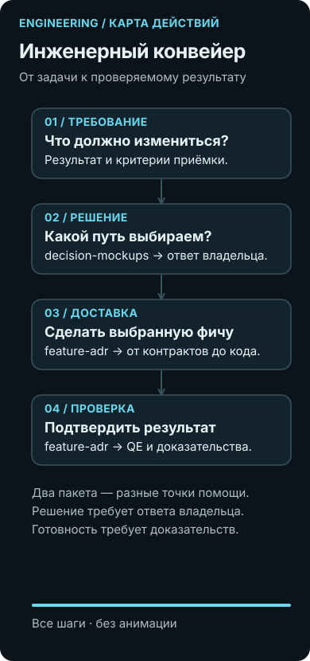
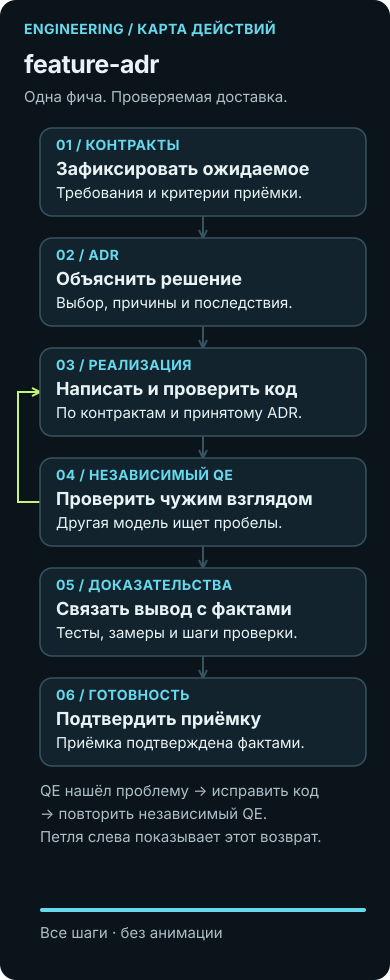
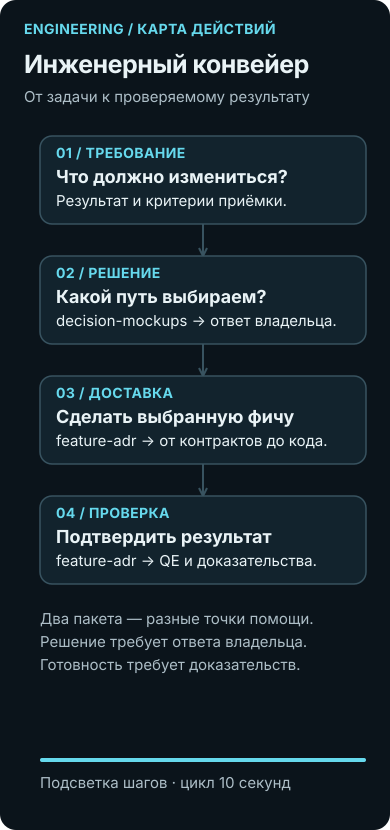
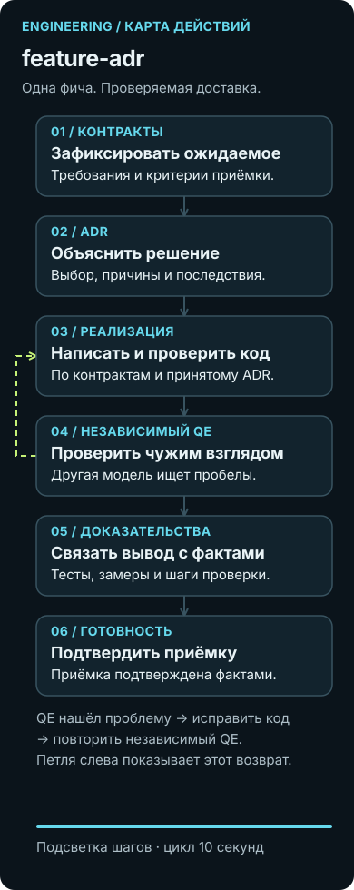
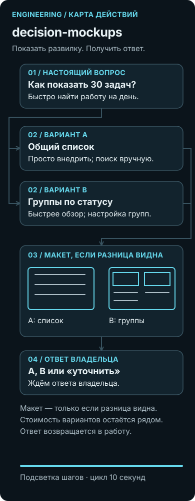

Engineering pipeline
От вопроса
к проверенному коду
Три карты помогают увидеть путь: где договориться о результате, где получить решение владельца и как подтвердить готовность фичи.
Превью статичны. Откройте разбор, затем раскройте анимированную схему — или выберите версию без движения.

Инженерный конвейер
Карта семейства: где нужен ответ владельца, а где — дисциплина доставки одной фичи.
Разобрать схему →
feature-adr
Для фичи с понятной целью: закрепить договорённости и довести их до проверенного кода.
Разобрать схему →decision-mockups
Когда есть настоящая развилка: показать жизнеспособные варианты, цену каждого и запросить ответ.
Разобрать схему →Карта действий
Инженерный конвейер
Карта семейства: где нужен ответ владельца, а где — дисциплина доставки одной фичи.
Требование → решение → доставка → проверка. На этапе решения decision-mockups готовит сравнение вариантов и вопрос владельцу. feature-adr связывает согласованные требования и решения с кодом и доказательствами проверки.
Открыть анимированную схему


Карта действий
feature-adr
Для фичи с понятной целью: закрепить договорённости и довести их до проверенного кода.
Контракты → ADR → реализация → независимый QE → доказательства → готовность. Замечания QE возвращают работу к исправлению реализации и повторному QE. Доказательства связывают результат с критериями приёмки.
Открыть анимированную схему


Карта действий
decision-mockups
Когда есть настоящая развилка: показать жизнеспособные варианты, цену каждого и запросить ответ.
Как показать 30 задач? A: общий список — просто внедрить, но поиск вручную. B: группы по статусу — быстрее обзор, но нужны правила группировки. Если разница видна пользователю, показать макет. Владелец отвечает A, B или «уточнить». До его ответа выбор не сделан.
Открыть анимированную схему
